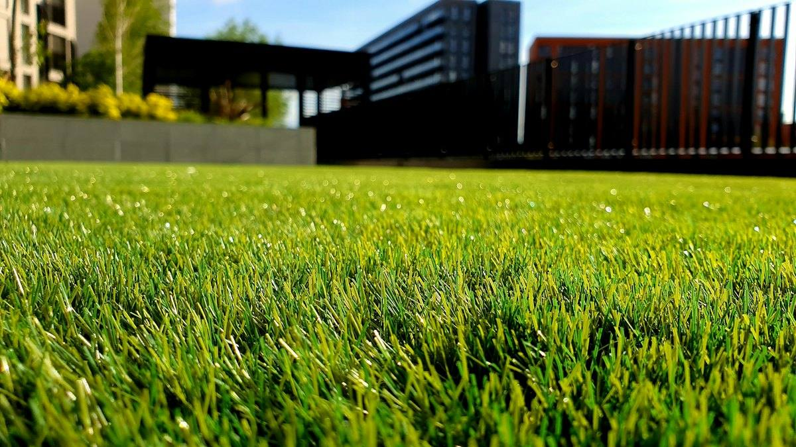
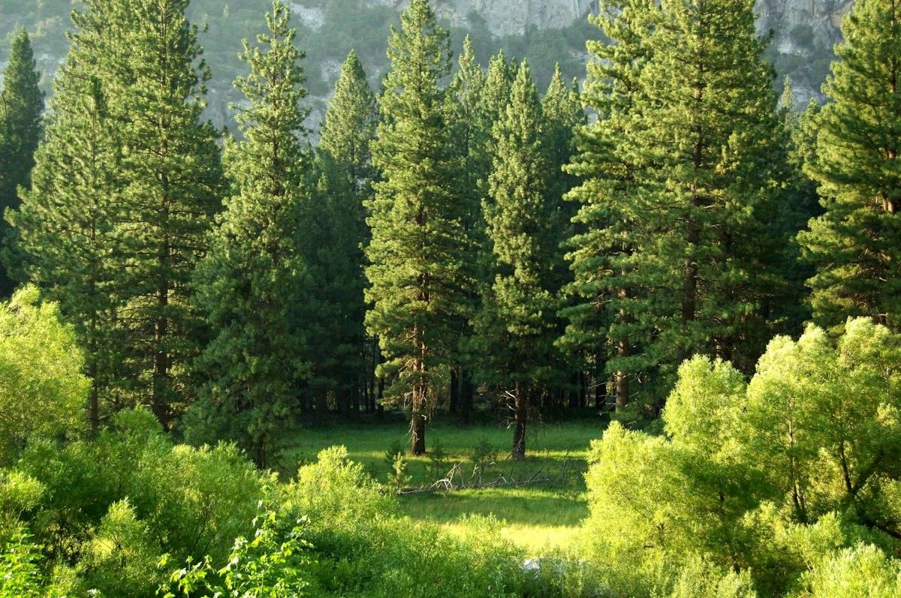
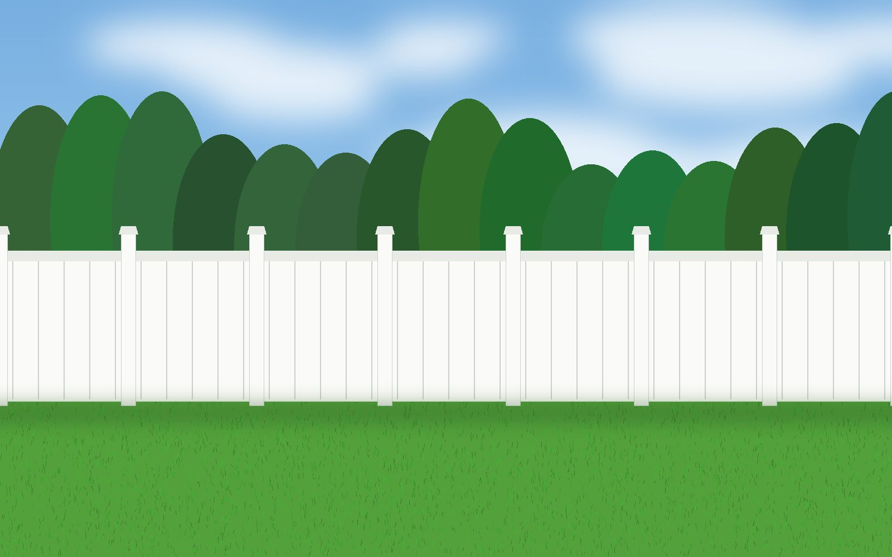
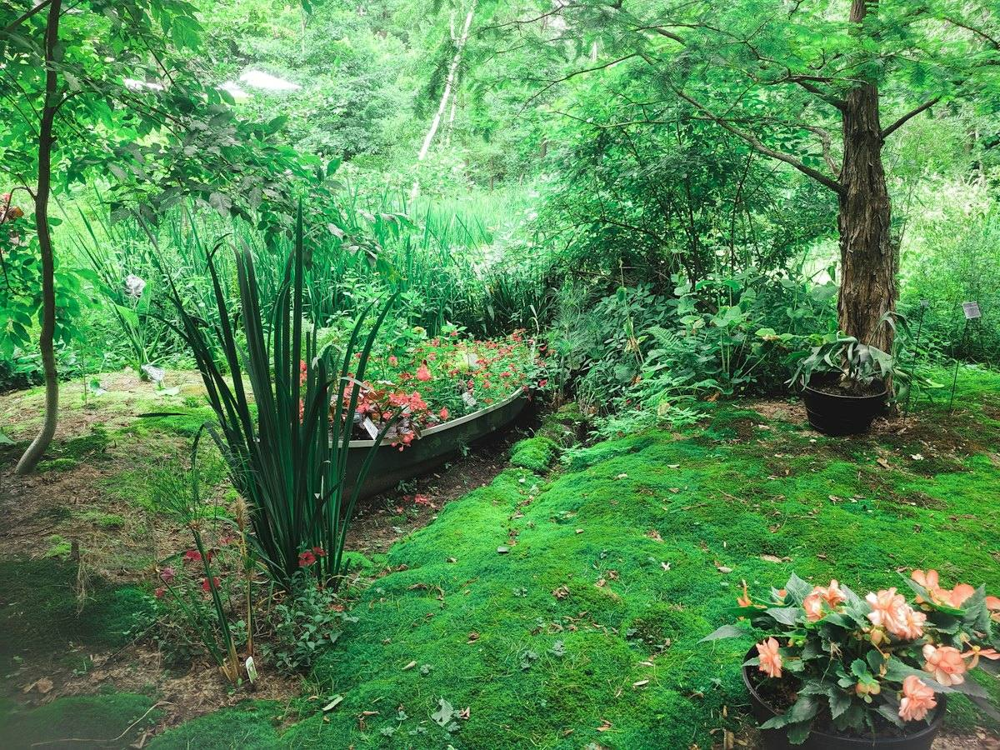

Lawn & Tree Care in Apex, NC
Lawn care, landscaping, tree work and hardscaping for a healthier, better-looking property all year long. 100% insured.
- 5 Stars on Google
- 100% Insured
- Free Estimates
Everything your yard needs, one call
From weekly mowing to new patios, tree removal and even Christmas lights, we take care of the whole property so you don't have to juggle different companies.

Lawn Care & Maintenance
Mowing, edging, aeration, overseeding, sod, lawn repair and seasonal cleanups.
Learn more →
Landscaping
Design, new beds, planting, privacy trees, mulch, stone, edging, trimming and overgrowth removal.
Learn more →
Tree Services
Tree removal, trimming and pruning, dead tree replacement, stump grinding and debris hauling.
Learn more →
Hardscaping
Paver patios, walkways, driveway extensions, fire pits, gravel paths and permeable pavers.
Learn more →
Fencing
Vinyl privacy and decorative fences and gates for privacy, pets, kids and curb appeal.
Learn more →
Christmas Lighting
Custom holiday light design, professional installation, maintenance, takedown and storage.
Learn more →
Commercial & HOA Maintenance
Recurring grounds maintenance, common areas, trash pickup, plant replacement and ground cover.
Learn more →Not sure what you need?
Tell us about your property and we'll put together a free estimate.
Get a free estimate →Google Reviews
Top-rated by our neighbors
Every one of our Google reviews is five stars. See what Triangle homeowners say about working with us.
Local crew. Pro results.
We're based right here in Apex, so we know Triangle yards: the red clay, the summer heat and the fescue that needs extra care every fall.
- 100% insured on every job
- Lawn, landscape, tree and hardscape work from one company
- Free, no-pressure estimates
- Rated 5 stars on Google
Getting started is easy
01Free Estimate
Call, text or request a quote online. We look at your property, talk through what you want and give you a clear, upfront price.
02Scheduling
Pick a date for your project, or set up weekly or bi-weekly service for ongoing care.
03The Work
Our crew handles it start to finish, done right for Triangle clay and weather.
04Clean Up & Enjoy
We clean up, haul away the debris and leave the property looking sharp.
Proudly serving Apex & the Triangle
Based in Apex, we work throughout southwest Wake County. Pick your town to see how we help homeowners there.
Tips for Triangle yards
Straightforward advice for lawns, beds and trees in our part of North Carolina.
Fall Lawn Care Guide for Apex & the Triangle
Fall is the most important season for tall fescue lawns. Here is what to do and when.
Read the guide →
Mulch vs. Pine Straw: Which Is Better?
Both are great choices for Carolina landscapes. Here is how to pick.
Read the guide →When to Trim Trees in North Carolina
Timing matters for healthy trees. Safety problems should never wait.
Read the guide →Common questions
Do you offer free estimates?
Yes. Call, text or use the form on our contact page with your address and what you need, and we will get back to you with a price.
What areas do you serve?
We are based in Apex, NC and serve Cary, Holly Springs, Fuquay-Varina, Morrisville and southwest Raleigh. Not sure if you are in range? Just ask.
Are you insured?
Yes. We are 100% insured, so your property is protected on every job.
Do you handle both lawn care and tree work?
Yes. From weekly mowing to tree removal, landscaping, patios and even Christmas lights, one call covers everything outside your home.
Do you work with HOAs and commercial properties?
Yes. We provide recurring grounds maintenance, common area upkeep and trash pickup for HOA communities and commercial properties.
When is the best time to aerate and overseed?
For tall fescue lawns, the most common type in the Triangle, early fall is best, roughly late August through mid-October, with September ideal.
Ready for a better-looking yard?
Free estimates across Apex and the Triangle. Call or text today.